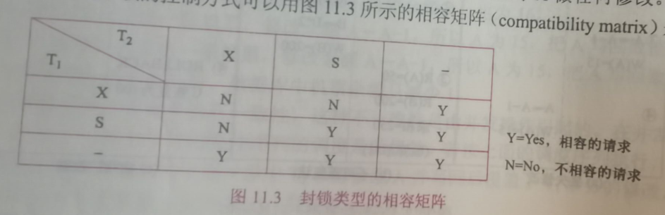
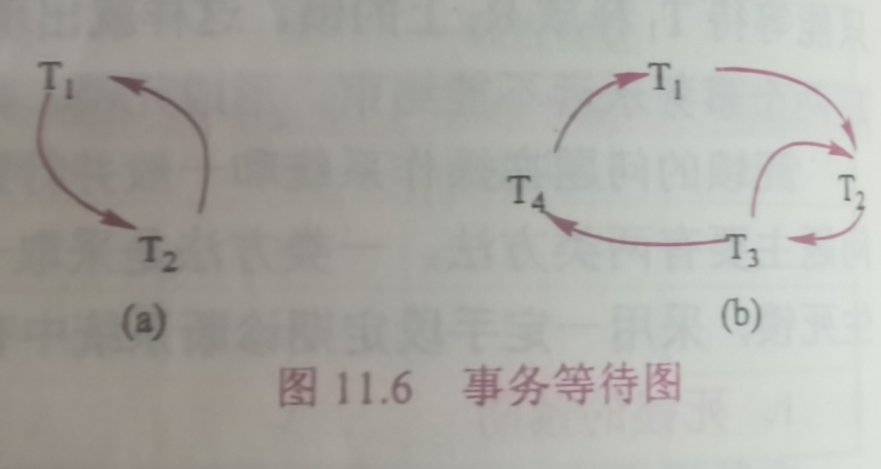
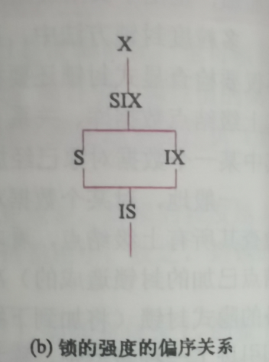

第十一章 并发控制
[TOC]
-
事务可以一个一个的串行执行，即每个时刻只有一个事务运行
-
在单处理机系统中，事务的并行执行实际上是这些并行事务的并行操作轮流交叉运行–交叉并发方式
11.1 并发控制概述
-
事务是并发控制的基本单位
并发操作带来的数据不一致性
-
丢失修改
-
不可重复读
-
读“脏”数据
并发控制的主要技术
-
封锁
-
时间戳
-
乐观控制法
-
多版本并发控制
11.2 封锁
基本封锁类型
-
排他锁（X锁）
-
共享锁（S锁）

11.3 封锁协议
-
即约定的一些规则
一级封锁协议
-
事务T在修改数据R之前必须对其加X锁，直到事务结束才释放(可以解决丢失修改问题，另外两个问题不会解决)
二级封锁协议
-
二级封锁协议是在一级封锁协议基础上增加事务T在读取数据R之前必须先对其加S锁，读完后即释放S锁（不可解决重复读问题）
三级封锁协议
-
在一级封锁协议的基础上增加了事务T在读取数据R之前必须先对其加S锁，直到事务结束才释放
11.4 活锁和死锁
-
活锁即饥饿现象，解决方案：先来先服务、优先级
-
和操作系统一样，解决方案：死锁预防
死锁的四个必要条件
-
互斥条件
-
不可剥脱条件
-
请求与保持条件
-
循环等待条件
预防死锁的两种方法
-
一次封锁法
-
顺序封锁法-
-
在数据库中预防死锁的方法不合适
死锁的诊断与解除
-
超时法
-
等待图法(图中有回路就死锁)

11.5 并发调度的可串行性
11.5.1 可串行性调度
可串行化调度的定义：多个事务的并发执行是正确的，当且仅当其结果与按某一次序串行的执行这些事务时的结果相同。
11.5.2 冲突可串行性调度
冲突操作：指不同事物对同一数据的读写操作与写写操作
冲突可串行化调度->可串行化调度
11.6 两段锁协议
-
事务遵守两段锁协议是可串行化的充分调价，而不是必要条件
两段锁协议定义：
-
所有事物必须分为两个阶段对数据进行加锁解锁
11.7 封锁的粒度
-
封锁对象的大小称为封锁粒度
-
封锁对象可以是逻辑单元也可以是一些物理单元
11.7.1 多粒度封锁
11.7.2 意向锁
-
如果对一个结点加意向锁，则说明该结点的下层结点正在被加锁
IS锁、IX锁、 SIX锁
锁的强度

*11.8 其他的并发控制机制
在数据库中为什么要并发控制？并发控制技术能保证事务的哪些特性
-
为什么：数据库是共享资源，通常有多个事务同时在运行，当多个事务并发的存取数据库时就会产生同时读或修改同一数据的情况，若不加控制就会破坏数据库的一致性。
-
并发控制能保证事务的一致性和隔离性
并发操作可能会产生哪几类数据不一致？用什么方法能避免各种不一致情况？
-
丢失数据
-
不可重复度
-
读脏数据
可串行化的调度是正确的调度
可串行化调度的定义：多个事务的并发执行是正确的当且仅当其结果与按某一次序串行执行他们的结果相同，称这种调度为可串行化的调度